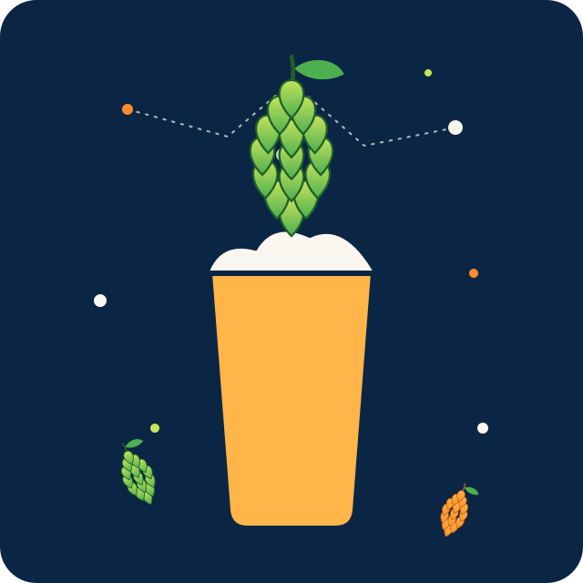
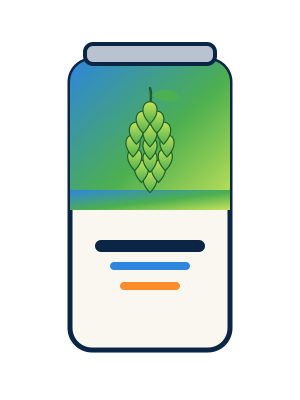
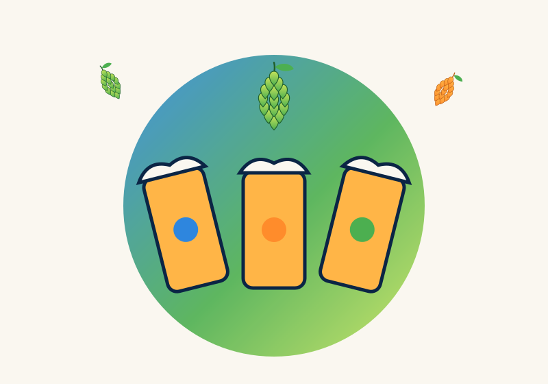
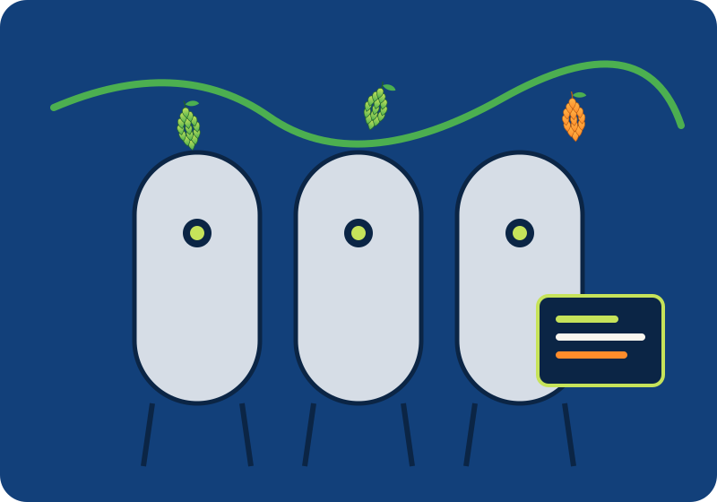

- Alkohol
- IBU
- EBC
- Hopfen
- Malz
- Hefe
- Extras
Demo-Ausgabe, kein brausicheres Rezept.
Crowdfunding ab 2. Februar 2027
Wir sind drei Craft-Bier-Fans und bauen die Brew.ai Flavor Engine: Du sagst ihr, was du magst, und sie komponiert aus einer riesigen Zutaten-Datenbank Hopfen, Malz, Hefe und Extras zu einem brausicheren Rezept. Die ersten fünf Sorten brauen wir mit dir.

So funktioniert's
Lieblingsbiere, Aromen, Bittere, Körper, Stärke. Du beschreibst, die Engine hört zu. Gern auch: „Wie Sommerabend am See, nur mit Mango.“
Die AI gleicht dein Profil mit hunderten Hopfensorten, Malzen, Hefen und Extras ab und balanciert Bittere, Süße und Aroma zu einem stimmigen Rezept.
Mehr Zitrus? Weniger Bittere? Du drehst an den Reglern, die Engine rechnet Stammwürze, IBU, Farbe und Alkohol live nach.
Ein Braumeister prüft jedes Rezept, dann braut es eine Lohnbrauerei. Kein Hobbykeller nötig, dein Bier kommt in die Dose.
Flavor Engine · Vorschau
Das hier ist eine vereinfachte Demo mit festen Regeln. Die echte Engine entwickeln wir mit dem Geld aus dem Crowdfunding, mit vollständiger Zutaten-Datenbank und Rezeptberechnung.
Demo-Ausgabe, kein brausicheres Rezept.
Crowdfunding · ab 2. Februar 2027
Mit dem Geld entwickeln wir die Flavor Engine und lassen die ersten Sude in einer Lohnbrauerei brauen. Jede Stufe schaltet neue Sorten frei, die es danach dauerhaft in unserem Webstore gibt.
0 € von 100.000 € · Kampagne startet am 2. Februar 2027
10.000 €
Prototyp der Flavor Engine und 1 Sorte: #BA-001 Citra Comet, gebraut in der Lohnbrauerei.
50.000 €
2 Sorten: dazu kommt #BA-002 Mango Mood.
100.000 €
5 Sorten: über die Sorten 3 bis 5 stimmt ihr ab. Danach gibt es alle dauerhaft im Webstore.
Alles oder nichts: Nur wenn das Funding-Ziel von 10.000 € erreicht wird, wird jemand belastet. Die weiteren Stufen sind Stretch Goals.
Belohnungen · Entwurf
5 €
15 €
Early Bird · 300×
25 € 35 €
59 €
Unser Tipp
99 €
200×
179 €
20×
349 €
5×
990 €
10×
2.490 €
Entwurf, finale Preise folgen vor dem Start. Versand bei Bier-Rewards zzgl. ca. 7–9 € innerhalb Deutschlands. Bier liefern wir nur an Personen ab 18 Jahren, mit Altersprüfung bei der Zustellung.
Die ersten fünf · Arbeitstitel

#BA-001 · 10.000 €
West Coast IPA · 6,2 %
Grapefruit, Zitrus, knackig bitter. Unser Erstsud.
#BA-002 · 50.000 €
Hazy Pale Ale · 5,2 %
Mango, Maracuja, weich und mit wenig Bittere.
#BA-003 · Voting
Amber Ale · 5,6 %
Karamell, Brotkruste, leichte Hopfenwürze.
#BA-004 · Voting
Session IPA · 4,0 %
Yuzu, Limette, sehr frisch.
#BA-005 · Voting
Black IPA · 6,8 %
Röstaromen, Kiefer, Kaffee und Zitrus.
Sorten 3 bis 5 sind Kandidaten fürs Community-Voting ab 100.000 €. Weitere Ideen: Hibiscus Pale Ale, Hoppy Weizen, alkoholfreies IPA.

Wer wir sind
Wir trinken seit Jahren alles, was hopfig, sauer, rauchig oder einfach nur verrückt ist. Irgendwann kam die Frage: Was, wenn jede und jeder sein perfektes Bier komponieren könnte, ohne Braukurs und eigene Anlage? So wie es schon Whisky gibt, der mit AI entwickelt wurde, wollen wir das für Craft Beer bauen.
Roadmap
Für Lohnbrauereien
Brew.ai vermittelt fertige, brausichere Rezepte samt Kundschaft direkt an euer Sudhaus. Ihr bekommt planbare Aufträge, standardisierte Rezeptdaten und weniger Leerlauf auf euren Anlagen.

FAQ
Am 2. Februar 2027, für 30 Tage. Trag dich unten ein, dann sagen wir dir als Erstes Bescheid und du sicherst dir die Early-Bird-Rewards.
Eine erfahrene Lohnbrauerei mit professioneller Anlage. Wir entwickeln Rezepte und Marke, die Brauerei sorgt für gleichbleibende Qualität.
Die Kampagne läuft nach dem Alles-oder-nichts-Prinzip. Wird das Funding-Ziel von 10.000 € nicht erreicht, wird niemand belastet.
Unsere Biere enthalten Gerste, teils Weizen oder Hafer (glutenhaltig). Alle Pflichtangaben stehen auf dem Etikett und auf der Rezeptkarte.
Zum Start innerhalb Deutschlands, weitere Länder prüfen wir. Versand nur an Personen ab 18 Jahren, mit Altersprüfung bei der Zustellung.
Ja, das ist das Ziel. Schon in der Kampagne geht das mit dem Reward „Your Own Beer“. Später öffnen wir die Engine im Webstore für alle.
Hol dir dein Bier, bevor es existiert. Wir melden uns, sobald die Kampagne live ist, und Early Birds bekommen die besten Rewards.